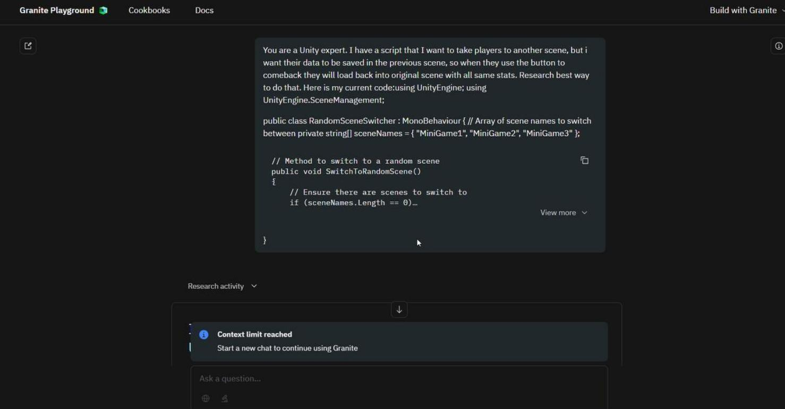
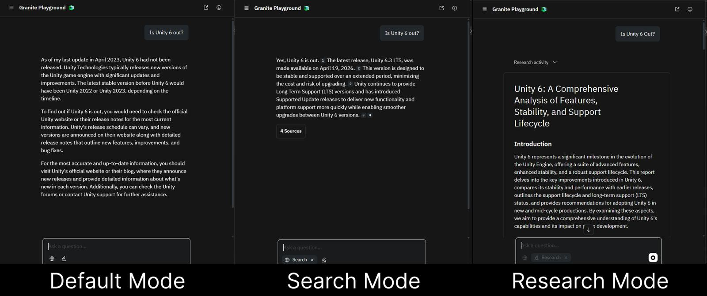
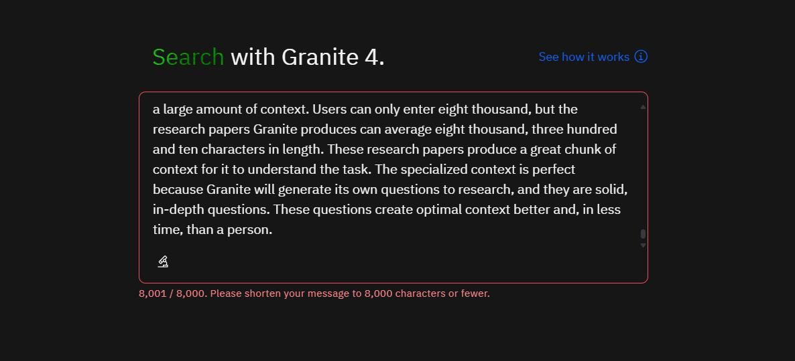
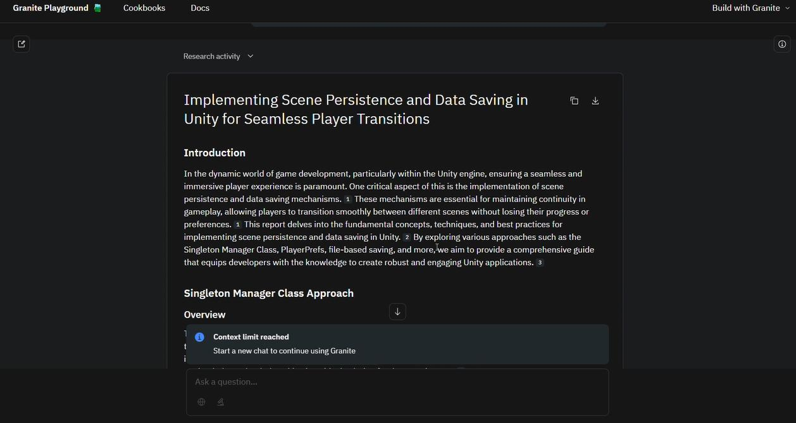

Game development team
Prompting Granite
Granite is a family of large language models created by IBM. Through using it over time, I developed an understanding of how to prompt it effectively.
Roleplay
Roleplay improves results by giving Granite a clear context and identity, such as “You are a Unity 6 expert and senior C# developer.” This helps it generate more relevant and correctly structured code, including appropriate Unity conventions.

Modes
Granite Playground has three modes: default, search, and research. These produce very different outputs. In testing with the same question (“Is Unity 6 out?”), default mode used outdated training data, search mode pulled current web information, and research mode produced a detailed analysis comparing versions and confirming the answer. Understanding these modes is key to choosing the right tool for the task.

Using Research for Context
Default mode can produce outdated or incomplete Unity scripts, while research mode improves accuracy by generating up-to-date, structured context. Prompts like “research how to implement this feature” provide detailed background information that improves outputs, although occasional issues like missing imports can still occur due to context limits. Research mode is particularly effective because it generates its own focused questions, producing dense, relevant context that is often more efficient than manual research.

